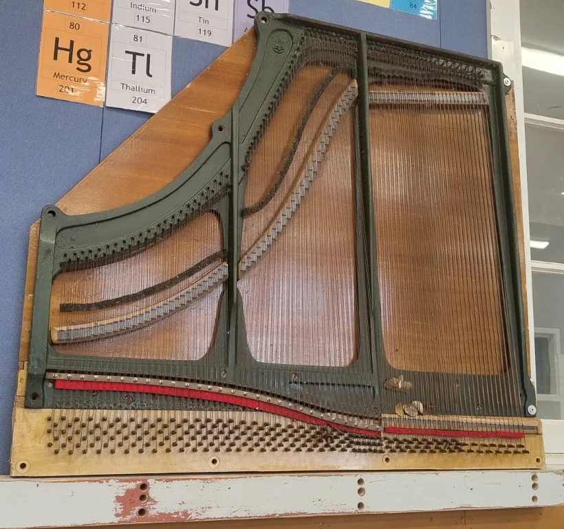
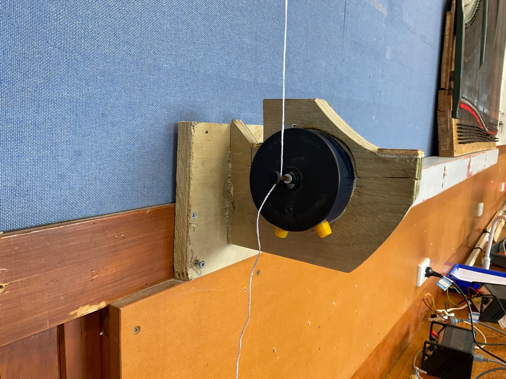
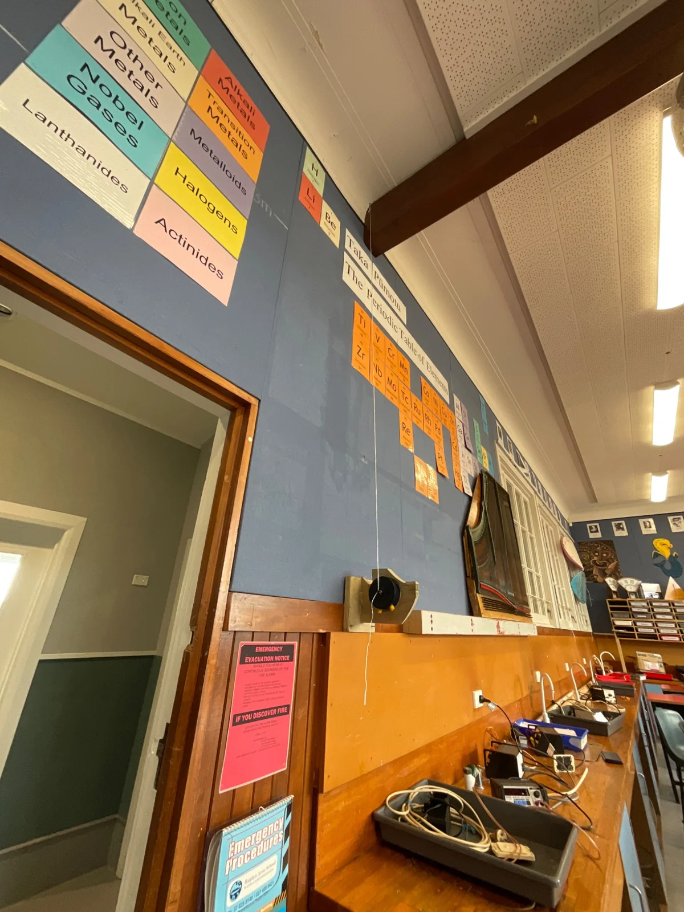
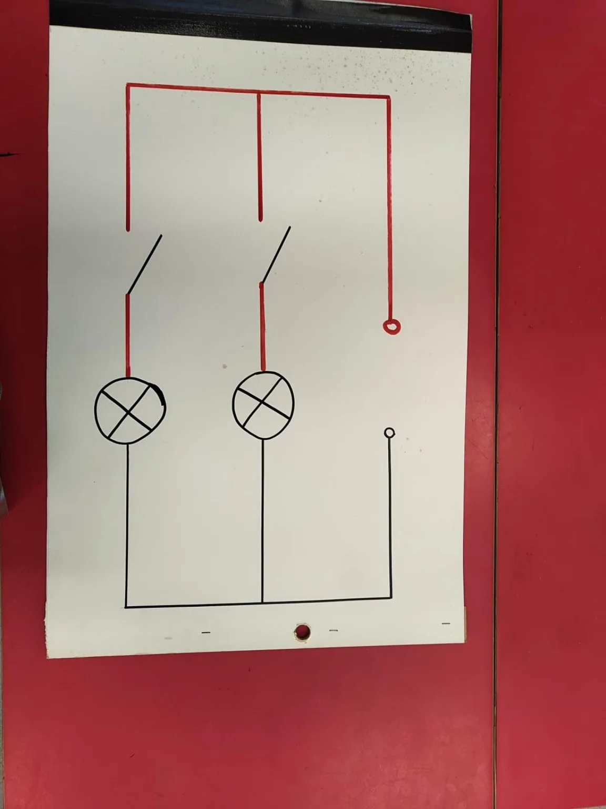

Goal
Design and construct visual and working models, use them in teaching, and evaluate how they support students’ understanding of scientific concepts.
Rationale
Physical models can make abstract scientific ideas easier to investigate and discuss. I want to construct resources that serve a clear learning purpose and examine their usefulness in practice.
Action steps
1. Construct or co-construct at least two appropriate models with my mentor teacher’s guidance, documenting my contribution and each resource’s purpose.
2. Use completed models in teaching and explicitly explain the analogy and its limitations.
3. Collect students’ explanations or other learning evidence and use this, alongside my mentor teacher’s feedback, to evaluate and refine the models.
Success criteria
1. I construct or co-construct at least two resources and document my contribution and their intended learning purpose.
2. I use the resources in teaching, explain their limitations and evaluate students’ understanding using recorded evidence. Unfinished resources are identified as work in progress.
Midpoint evaluation
I have constructed and used physical models, including a ramp model to explain voltage. I am discussing further designs with my mentor and aim to build a few more before my placement ends. I will evaluate their effectiveness through students’ explanations and application of the concepts.
Final evaluation and next steps
Links to professional standards / KTT
Standard 5 - Design for learning: selecting and constructing representations for learners’ needs.
Standard 6 - Teaching: using models and checking understanding.
Standard 2 - Professional learning: evaluating and refining the resources through evidence and feedback.
Evidence
- Photographs of the working models
- Year 13 standing-waves demonstration plan
- Standing-wave frame photographs and playable video
Photographic evidence

Ball-track construction: I built or helped build these energy-transformation tracks, including a 360° loop. This supports Goal 2’s construction criterion. Learner explanations are still needed to evaluate their effectiveness.

Large ramp: a model I built or helped build and used as an analogy for voltage. This documents the resource; lesson reflections and learner responses are needed to evaluate understanding and the analogy’s limitations.

Piano-string standing-wave resource: work in progress. This documents development towards Goal 2, rather than a completed or evaluated teaching resource.
Standing-wave apparatus: wooden support frame
I built a wooden clamp/frame to hold the vibration generator securely for a standing-wave demonstration on a string. My contribution was the construction of the support frame, rather than the vibration generator or signal generator.
The piano-string resource beside it provides another way of showing standing waves. In this setup, driving the string with the vibration generator connected to the signal generator produces more pronounced waves, making the pattern easier to see. This develops my aim of building visual and working resources with a clear teaching purpose.
The photographs document the frame and the arrangement of the apparatus. The accompanying video records the demonstration. These provide evidence of construction and operation; students’ explanations or work will be needed to evaluate how well the resource supports their understanding.

Wooden frame I built to support the vibration generator and string.

Wider view of the driven-string setup beside the piano-string resource.
Electromagnetic induction: oscillating magnet and coil
I tested a working model that makes electromagnetic induction visible through a voltmeter reading. Students will compare the reading when the magnet is stationary with the reading when it oscillates relative to the coil. The video documents preparation and testing for a planned Year 10 station, not evidence of student learning. I will use students’ observations and explanations to evaluate how well the model supports their understanding.
Video: Oscillating magnet and coil
Colour-coded circuit guide | 10 November 2026
I drew two independently switched lamp branches on thick card using standard circuit symbols. Red and black distinguish the active and neutral paths. Students can use the drawing to trace each branch and decide which connections to make with the classroom kit.
I designed the guide as an additional way to access the same practical, particularly for students who missed the previous lesson or found the wiring difficult. In Lesson 09, students who need more practice will use the guide while those who completed the challenge move on to the generator stations. I will look for whether students can trace a branch and test each switch with less prompting.

11 November 2026 | Lesson 09 setup evidence
The photographs show the visual and working models prepared for Year 10 Science 1, including the colour-coded circuit guide and three generator stations. They show the setup, not evidence of student learning.
 Two-lamp circuit guide and components
Two-lamp circuit guide and components
 Manu Bay: opened motor
Manu Bay: opened motor
 Ngārunui Beach: moving magnet and coil
Ngārunui Beach: moving magnet and coil
 Papahua Skatepark: hand-turned motor and meter
Papahua Skatepark: hand-turned motor and meter